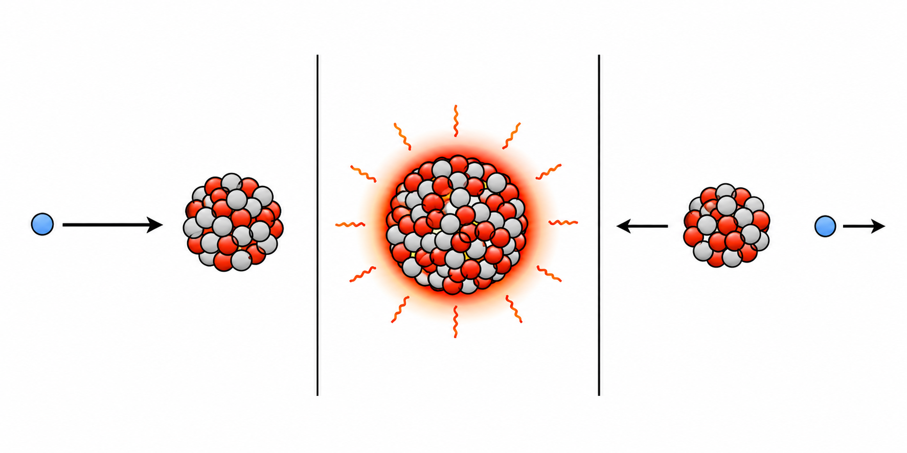

Aula 5 - Reações Nucleares
Física Moderna 2
Introdução
Nas aulas anteriores, estudamos a radioatividade como transformação de núcleos instáveis. Agora reunimos essas transformações e as colisões nucleares em uma mesma linguagem: a reação nuclear. Em toda reação há reagentes nucleares, produtos nucleares e uma contabilidade rigorosa de número de massa, carga, energia e momento.
A pergunta central é: a reação libera energia ou precisa recebê-la? A resposta vem do valor \(Q\), a energia de reação. Ela explica tanto a emissão espontânea de uma partícula alfa quanto a energia mínima que um feixe deve possuir para produzir um novo nuclídeo em laboratório.
Objetivos
Ao final desta aula, devemos ser capazes de:
- Identificar reagentes, produtos, número de massa e carga em uma reação nuclear;
- Definir reação nuclear e distinguir processos espontâneos (naturais) de reações artificiais (induzidas);
- Explicar os significados físico e energético de reações exoenergéticas e endoenergéticas;
- Aplicar as conservações de \(A\) e \(Z\) para balancear reações e reconhecer partícula incidente, núcleo-alvo, núcleo composto, núcleo-produto e partícula ejetada;
- Calcular e interpretar a energia de reação \(Q\) em emissões \(\alpha\), \(\beta^-\), \(\beta^+\), captura eletrônica e reações induzidas;
- Analisar por que massas nucleares podem ser substituídas por massas atômicas e quando entram as correções associadas ao elétron;
- Derivar o limiar cinemático a partir das conservações de energia e momento linear;
- Avaliar, em uma situação experimental, as funções distintas de \(Q\), do limiar cinemático e da barreira de Coulomb.
Reações nucleares e energia
Reagentes, produtos e conservações
Uma reação nuclear é uma transformação que altera um núcleo ou produz novos núcleos. Os objetos à esquerda da seta são os reagentes nucleares; à direita estão os produtos nucleares. Uma forma geral para uma reação induzida é
\[{}^{A}_{Z}\mathrm{X}+{}^{a}_{z}\mathrm{x} \longrightarrow{}^{A'}_{Z'}\mathrm{X}'+{}^{a'}_{z'}\mathrm{x}'.\]
As letras maiúsculas (\(A\), \(A'\)) indicam números de massa dos núcleos pesados; as minúsculas (\(a\), \(a'\)), os das partículas. As letras \(Z\), \(Z'\), \(z\) e \(z'\) representam os respectivos números atômicos; o primo indica uma espécie no lado final da reação. Em cada evento, conservam-se o número de massa e a carga elétrica:
\[A+a=A'+a',\qquad Z+z=Z'+z'.\]
O balanceamento de \(A\) e \(Z\) identifica produtos possíveis, mas não garante que a reação possa ocorrer. Para isso, também verificamos energia e momento.

Espontâneas e artificiais
Uma reação espontânea, usualmente chamada de decaimento radioativo natural, ocorre sem que uma partícula externa seja lançada contra o núcleo. Um núcleo-pai instável transforma-se em núcleo-filho e pode emitir \(\alpha\), \(\beta^-\), \(\beta^+\), neutrino, antineutrino ou radiação gama.
Uma reação artificial ou induzida começa com uma partícula incidente: próton, nêutron, deuteron, alfa ou outra. Ela colide com um núcleo-alvo e pode formar produtos diferentes. Natural e artificial não significam “com” e “sem” conservação: ambas obedecem exatamente às mesmas leis físicas.
Em um decaimento espontâneo, a instabilidade já está no núcleo-pai; por exemplo, o carbono-14 presente em seres vivos decai por \(\beta^-\) e permite técnicas de datação. Em uma reação induzida, o laboratório escolhe o projétil e sua energia: prótons podem produzir radioisótopos para medicina nuclear, enquanto nêutrons são particularmente eficientes para iniciar reações porque não sofrem repulsão de Coulomb na entrada. Em ambos os casos, a energia liberada não é “massa que desaparece”: é a redução da energia de repouso total, associada à reorganização dos núcleons e de suas energias de ligação.

Energia da reação: valor \(Q\)
Definimos a energia de reação por
\[Q=\left(\sum m_{\rm reagentes}-\sum m_{\rm produtos}\right)c^2.\]
Esta é, por enquanto, a regra de cálculo: a diferença entre as massas de repouso inicial e final dá a energia total disponível. A seguir, a seção Demonstração: por que usar massas atômicas? justifica matematicamente as substituições de massas que serão usadas nos cálculos.
Com massas em unidade de massa atômica, usamos \(c^2=931{,}5\,\text{MeV/u}\); isto é, na conta,
\[\Delta m\,c^2=\Delta m\left(\frac{931{,}5\,\text{MeV}}{1\,\text{u}}\right).\]
Padrão numérico. Em cada cálculo, mantenha todos os algarismos fornecidos durante as operações e arredonde uma única vez, no resultado final. O resultado não pode ter mais precisão que o dado menos preciso: \(c^2=931{,}5\,\text{MeV/u}\) impõe, no máximo, quatro algarismos significativos, mas uma diferença de massas pequena pode reduzir esse número. Em somas e subtrações, respeite também a casa decimal menos precisa do dado fornecido.
Dados de massa usados nesta aula. Os valores são apresentados com seis casas decimais. Quando um nuclídeo não aparece na tabela selecionada fornecida aos estudantes, seu valor foi conferido na tabela AME2020 completa disponível no material da disciplina; nesta aula, isso ocorre para \(\ce{^{17}O}\), \(\ce{^{18}F}\) e \(\ce{^{234}Th}\). Os demais valores empregados constam na tabela selecionada em português. Nessa tabela, os átomos de deutério e trítio aparecem como D (\(\ce{^2H}\)) e T (\(\ce{^3H}\)); nesta aula, seus núcleos serão escritos em minúsculas: \(d\) (deuteron) e \(t\) (tríton).
- Reação exoenergética: \(Q>0\). A massa de repouso total diminui e a diferença aparece como energia cinética dos produtos, radiação ou excitação.
- Reação endoenergética: \(Q<0\). A massa de repouso final é maior; é necessário fornecer energia cinética ao sistema.
Se o alvo está inicialmente em repouso e não há outras formas de energia relevantes, sendo \(T_{\rm produtos}\) a soma das energias cinéticas de todos os produtos,
\[T_{\rm produtos}=T_{\rm incidente}+Q.\]
Essa igualdade é útil, mas não substitui a conservação do momento. Por isso, em uma reação endoenergética o projétil precisa fornecer um pouco mais que \(|Q|\) no laboratório.
Para onde vai a energia \(Q\)? O cálculo \(Q=(m_{\text{inicial}}-m_{\text{final}})c^2\) fornece a energia total liberada ou exigida pela reação. Quando há neutrino, sua massa de repouso é desprezível nesta escala e, por isso, não altera perceptivelmente o valor numérico de \(Q\); mas a sua energia cinética é indispensável no balanço final. Logo, \(Q\) é compartilhada por todos os produtos: energia cinética, recuo dos núcleos, excitação nuclear e, quando houver, radiação eletromagnética ou neutrinos. Em um decaimento beta, elétron ou pósitron, neutrino (ou antineutrino) e núcleo de recuo repartem \(Q\); por isso, a energia medida da partícula beta forma um espectro contínuo, e não um único valor.
Demonstração: por que usar massas atômicas?
Agora justificamos a regra de cálculo anunciada acima, antes de aplicá-la no Exemplo 5.1. A massa atômica \(M(X)\) inclui o núcleo e seus \(Z\) elétrons; a massa nuclear correspondente será indicada por \(m(X)\). Mais precisamente,
\[M(X)=m(X)+Zm_e-\frac{B_e(X)}{c^2},\]
em que \(B_e(X)\) é a energia de ligação total da eletrosfera. Para átomos leves, ela está tipicamente na escala de eV ou keV; para átomos pesados, o total pode alcançar centenas de keV. Nesta aula, a aproximação relevante é que a diferença dessas energias entre reagentes e produtos é pequena diante da escala de MeV considerada; assim,
\[m(X)\simeq M(X)-Zm_e.\]
Para uma reação formada apenas por núcleos,
\[{}^{A}_{Z}\mathrm{X}+{}^{a}_{z}\mathrm{x} \longrightarrow{}^{A'}_{Z'}\mathrm{X}'+{}^{a'}_{z'}\mathrm{x}',\]
a diferença de massa nuclear fica
\[\begin{aligned} \Delta m_{\rm nuc} &=[M(X)-Zm_e]+[M(x)-zm_e]\\ &\quad-[M(X')-Z'm_e]-[M(x')-z'm_e]\\ &=[M(X)+M(x)-M(X')-M(x')]\\ &\quad-(Z+z-Z'-z')m_e. \end{aligned}\]
Como a carga se conserva, \(Z+z=Z'+z'\); logo, o último termo é zero. Portanto,
\[\boxed{\Delta m_{\rm nuc}\simeq M(X)+M(x)-M(X')-M(x').}\]
Pela relação de Einstein, \(E=mc^2\), essa diferença de massa é precisamente a origem da energia de reação. Para a reação formada apenas por núcleos, retomamos a definição apresentada no início da seção:
\[\boxed{Q_{\rm nuc}=\left(\sum m_{\rm reagentes}-\sum m_{\rm produtos}\right)c^2=\Delta m_{\rm nuc}c^2.}\]
Definindo
\[\Delta B_e=B_e(X)+B_e(x)-B_e(X')-B_e(x'),\]
a relação exata entre a diferença de massas nucleares e as massas atômicas é
\[\Delta m_{\rm nuc}c^2=[M(X)+M(x)-M(X')-M(x')]c^2+\Delta B_e.\]
Ao desprezar \(\Delta B_e\), para a precisão adotada nesta aula, obtemos a regra prática:
\[\boxed{Q_{\rm nuc}\simeq[M(X)+M(x)-M(X')-M(x')]c^2.}\]
Quando uma das partículas for um nêutron, sua contribuição deve ser escrita diretamente como \(m_n\): ele não possui eletrosfera nem uma massa atômica neutra correspondente. O cancelamento das massas de repouso dos elétrons decorre da conservação da carga. A aproximação \(\simeq\) vem somente de desprezar \(\Delta B_e\). Nos exemplos seguintes, escreveremos simplesmente \(Q\), entendendo que essa aproximação foi adotada. As demonstrações específicas de \(\alpha\), \(\beta^-\), \(\beta^+\) e captura eletrônica mostrarão como essa regra geral se adapta a cada caso.
Exemplo 5.1: valor \(Q\) de uma reação exoenergética
Na reação \(p+\ce{^7_3Li ->}2\alpha\), o próton incidente está à esquerda e o alvo lítio-7, à direita. Usando massas atômicas \(M(\ce{^7Li})=7{,}016003\,\text{u}\), \(M(\ce{^1H})=1{,}007825\,\text{u}\) e \(M(\ce{^4He})=4{,}002603\,\text{u}\),
\[\begin{aligned} Q&=[7{,}016003+1{,}007825-2(4{,}002603)]\,\text{u}\\ &\quad\times\left(\frac{931{,}5\,\text{MeV}}{1\,\text{u}}\right)\\ &=17{,}35\,\text{MeV}. \end{aligned}\]
Logo, a reação é exoenergética. Se o próton incidente tivesse \(T_p=0{,}50\,\text{MeV}\), a energia cinética total dos dois alfas seria \(17{,}85\,\text{MeV}\), repartida entre eles de acordo com a conservação do momento.
Reações nucleares espontâneas
Nos decaimentos abaixo, usaremos os resultados demonstrados na seção anterior: massas atômicas neutras podem ser usadas diretamente, desde que os elétrons emitidos ou capturados sejam contabilizados corretamente.
Emissão alfa
\[\ce{^A_ZX -> ^{A-4}_{Z-2}Y +}\alpha.\]
\[Q_\alpha\simeq[M(X)-M(Y)-M(\ce{^4He})]c^2.\]
Como a alfa é o próprio núcleo de hélio-4, sua massa nuclear é
\[m_\alpha=m_{\rm nuc}(\ce{^4He})\simeq M(\ce{^4He})-2m_e.\]
Assim, a troca por massa atômica do hélio é justificada diretamente:
\[\begin{aligned} \Delta m&\simeq[M(X)-Zm_e]-[M(Y)-(Z-2)m_e]\\ &\quad-[M(\ce{^4He})-2m_e]\\ &=M(X)-M(Y)-M(\ce{^4He}). \end{aligned}\]
Exemplo 5.2: decaimento alfa do urânio-238
\[\ce{^{238}_{92}U -> ^{234}_{90}Th +}\alpha.\]
Dado adicional para este exemplo: como \(\ce{^{234}Th}\) não consta na tabela selecionada em PDF, use diretamente \(M(\ce{^{234}Th})=234{,}043600\,\text{u}\).
\[\begin{aligned} Q_\alpha&=[238{,}050787-234{,}043600\\ &\quad-4{,}002603]\,\text{u}\left(\frac{931{,}5\,\text{MeV}}{1\,\text{u}}\right)=4{,}270\,\text{MeV}. \end{aligned}\]
O valor positivo confirma que o decaimento é energeticamente permitido; a maior parcela aparece como energia cinética da alfa, e uma menor parcela como recuo do tório.
Emissão beta menos
No decaimento \(\beta^-\), um nêutron nuclear transforma-se em próton; são emitidos um elétron e um antineutrino:
\[\ce{^A_ZX -> ^A_{Z+1}Y + e^- + \bar{\nu}_e}.\]
\[Q_{\beta^-}\simeq[M(X)-M(Y)]c^2.\]
Aqui o núcleo-filho tem um próton a mais e o elétron emitido precisa aparecer como produto:
\[\begin{aligned} \Delta m&\simeq[M(X)-Zm_e]-[M(Y)-(Z+1)m_e]-m_e\\ &=M(X)-M(Y). \end{aligned}\]
O elétron que falta na massa atômica do átomo-filho e o elétron beta emitido cancelam-se exatamente no termo de massa de repouso; a pequena diferença de energia de ligação eletrônica é desprezada.
Exemplo 5.3: carbono-14
\[\ce{^{14}_{6}C -> ^{14}_{7}N + e^- + \bar{\nu}_e}.\]
\[\begin{aligned} Q_{\beta^-}&=[14{,}003242-14{,}003074]\,\text{u} \left(\frac{931{,}5\,\text{MeV}}{1\,\text{u}}\right)\\ &=0{,}156\,\text{MeV}. \end{aligned}\]
Como o antineutrino pode levar uma fração variável de energia, o elétron beta não sai sempre com a mesma energia cinética.
Emissão beta mais
No decaimento \(\beta^+\), um próton nuclear transforma-se em nêutron e são emitidos pósitron e neutrino:
\[\ce{^A_ZX -> ^A_{Z-1}Y + e^+ + \nu_e}.\]
\[Q_{\beta^+}\simeq[M(X)-M(Y)-2m_e]c^2.\]
O núcleo-filho tem um próton a menos e o pósitron emitido também possui massa \(m_e\):
\[\begin{aligned} \Delta m&\simeq[M(X)-Zm_e]-[M(Y)-(Z-1)m_e]-m_e\\ &=M(X)-M(Y)-2m_e. \end{aligned}\]
As duas massas de elétron têm origens distintas: uma é a diferença entre as eletrosferas dos átomos neutros, e a outra é a massa do pósitron emitido.
Exemplo 5.4: flúor-18
\[\ce{^{18}_{9}F -> ^{18}_{8}O + e^+ + \nu_e}.\]
Dado adicional para este exemplo: como \(\ce{^{18}F}\) não consta na tabela selecionada em PDF, use diretamente \(M(\ce{^{18}F})=18{,}000937\,\text{u}\).
\[\begin{aligned} Q_{\beta^+}&=[18{,}000937-17{,}999160-0{,}001098]\,\text{u}\\ &\quad\times\left(\frac{931{,}5\,\text{MeV}}{1\,\text{u}}\right)\\ &=0{,}632\,\text{MeV}. \end{aligned}\]
O pósitron pode posteriormente se aniquilar com um elétron, produzindo dois fótons gama; essa aniquilação é uma etapa posterior ao decaimento nuclear.
Captura eletrônica
Na captura eletrônica, o núcleo captura um elétron orbital, usualmente de uma camada interna:
\[\ce{^A_ZX + e^- -> ^A_{Z-1}Y + \nu_e}.\]
\[Q_{CE}\simeq[M(X)-M(Y)]c^2.\]
O elétron capturado entra como reagente e o núcleo-filho possui carga \(Z-1\):
\[\begin{aligned} \Delta m&\simeq[M(X)-Zm_e]+m_e-[M(Y)-(Z-1)m_e]\\ &=M(X)-M(Y). \end{aligned}\]
Portanto, para massas atômicas, a massa do elétron capturado se cancela.
Exemplo 5.5: berílio-7
\[\ce{^{7}_{4}Be + e^- -> ^{7}_{3}Li + \nu_e}.\]
\[\begin{aligned} Q_{CE}&=[7{,}016929-7{,}016003]\,\text{u} \left(\frac{931{,}5\,\text{MeV}}{1\,\text{u}}\right)\\ &=0{,}863\,\text{MeV}. \end{aligned}\]
Depois da captura, a lacuna eletrônica pode produzir raios X característicos ou elétrons Auger. Isso é rearranjo da eletrosfera, não uma nova reação nuclear.
Na captura eletrônica, como há essencialmente dois corpos no processo nuclear, o neutrino costuma levar a maior parte de \(Q\); pequenas parcelas ficam no recuo nuclear e nas energias de rearranjo atômico (raios X ou elétrons Auger).
Reações nucleares artificiais
Exemplo histórico: a descoberta do nêutron
Em 1932, James Chadwick usou uma fonte de partículas alfa para bombardear berílio. A reação nuclear principal pode ser escrita como
\[\alpha+\ce{^9_4Be -> ^{12}_6C}+n.\]
O nêutron é a partícula ejetada nessa reação; a alfa é a partícula incidente, o berílio-9 é o núcleo-alvo e o carbono-12 é o núcleo-produto. Como o alvo era leve, esse experimento também mostra que uma reação artificial não precisa necessariamente ser uma fissão ou exigir um grande acelerador.
Com massas atômicas, \(M(\ce{^4He})=4{,}002603\,\text{u}\), \(M(\ce{^9Be})=9{,}012183\,\text{u}\), \(M(\ce{^{12}C})=12{,}000000\,\text{u}\) e \(m_n=1{,}008665\,\text{u}\), obtemos
\[ \begin{aligned} Q&=[4{,}002603+9{,}012183\\ &\quad-12{,}000000-1{,}008665]\,\text{u}\left(\frac{931{,}5\,\text{MeV}}{1\,\text{u}}\right)\\ &=5{,}702\,\text{MeV}. \end{aligned} \]
O resultado é exoenergético. A evidência decisiva, porém, não foi apenas o balanço de massas: a radiação neutra ejetava prótons rápidos de uma placa de parafina. Chadwick comparou as energias desses prótons de recuo com as previsões para fótons gama e concluiu que o agente deveria ser uma partícula sem carga e com massa próxima à do próton — o nêutron. Esse encadeamento entre reação nuclear, partícula ejetada e detecção indireta é um modelo importante de investigação experimental.
Partícula incidente, alvo e produtos
Para ler a notação \(\ce{A(a,b)B}\), acompanhe a sequência física:
\[a+A\longrightarrow[C]^*\longrightarrow B+b.\]
- \(a\): partícula incidente ou projétil;
- \(A\): núcleo-alvo, geralmente em repouso no laboratório;
- \([C]^*\): núcleo composto, estado intermediário excitado;
- \(B\): núcleo-produto ou núcleo residual;
- \(b\): partícula ejetada, que sai ao final.
O modelo do núcleo composto descreve uma colisão em que o projétil é absorvido por tempo muito curto. A energia se redistribui entre os núcleons do sistema \([C]^*\); em seguida, ele se desfaz emitindo uma partícula e deixando o núcleo-produto. Os colchetes destacam que \([C]^*\) é uma etapa intermediária, não um produto final.
A excitação sempre produz radiação gama? Não. O asterisco indica energia interna acima do estado fundamental, mas essa energia pode aparecer como energia cinética das partículas ejetadas, permanecer no núcleo residual ou ser emitida como fóton gama. Se o residual permanecer excitado, escrevemos explicitamente
\[a+A\longrightarrow[C]^*\longrightarrow b+B^* \longrightarrow b+B+\gamma.\]
Portanto, o gama é uma possibilidade comum de desexcitação, não uma consequência obrigatória de todo núcleo composto excitado.
O processo pode ser lido em três etapas: (1) a partícula incidente aproxima-se do núcleo reagente (o alvo); (2) ocorre a captura e forma-se o núcleo composto excitado \([C]^*\); (3) esse sistema se reorganiza e sai como núcleo-produto \(B\) mais partícula ejetada \(b\). O desenho é esquemático — os tamanhos não estão em escala —, mas conserva a ideia essencial de que a etapa intermediária contém todos os núcleons do projétil e do alvo.


Exemplo 5.6: identificando as etapas
\[\alpha+{}^{14}_{7}\mathrm{N} \longrightarrow[{}^{18}_{9}\mathrm{F}]^* \longrightarrow{}^{17}_{8}\mathrm{O}+p.\]
Aqui, a alfa é a incidente, o nitrogênio-14 é o alvo, o flúor-18 excitado é o núcleo composto, o oxigênio-17 é o núcleo-produto e o próton é a partícula ejetada.
Energia cinética mínima: limiar e barreira
Considere, por exemplo, a reação endoenergética \(\alpha+\ce{^{14}_{7}N -> ^{17}_{8}O}+p\), discutida mais adiante. Ela tem a forma geral \(a+A\to B+b\): a partícula incidente \(a\) vem à esquerda, seguida pelo alvo \(A\); à direita ficam primeiro o núcleo-produto \(B\) e depois a partícula ejetada \(b\). Com o alvo inicialmente em repouso no laboratório, a conservação da energia (sem incluir as massas de repouso, já reunidas em \(Q\)) e do momento linear fornece
\[T_a+Q=T_B+T_b,\qquad \vec p_a=\vec p_B+\vec p_b.\]
No limiar de uma reação endoenergética, os produtos não podem ter movimento relativo: eles se deslocam juntos, com a mesma velocidade \(\vec V\). Assim,
\[\vec p_a=(m_B+m_b)\vec V\]
e, pela conservação do momento,
\[ \begin{aligned} T_B+T_b &=\frac12m_BV^2+\frac12m_bV^2\\ &=\frac{p_a^2}{2(m_B+m_b)}. \end{aligned} \]
Como \(p_a^2=2m_aT_a\), a conservação da energia fica
\[T_a+Q=\frac{m_a}{m_B+m_b}T_a.\]
No limiar, \(T_a=E_{\rm lim}\). Como \(|Q|\ll m_ic^2\), podemos usar \(m_B+m_b\approx m_a+m_A\); portanto,
\[ \begin{aligned} E_{\rm lim}\left(1-\frac{m_a}{m_a+m_A}\right)&=-Q,\\ \boxed{E_{\rm lim}\approx -Q\left(1+\frac{m_a}{m_A}\right).} \end{aligned} \]
O fator adicional é a energia cinética do movimento conjunto dos produtos, exigida pela conservação do momento linear. Por isso, \(E_{\rm lim}>|Q|\). Para \(Q>0\), o limiar cinemático é zero; isso não elimina a repulsão elétrica entre partículas carregadas.
Como estudado na Aula 2, a energia potencial elétrica entre projétil e alvo é \(V_C=kZ_aZ_Ae^2/r\). Para estimar a barreira, tomamos a distância de contato nuclear \(r\approx R_a+R_A\), com \(R=1{,}2A^{1/3}\,\text{fm}\) e \(k e^2=1{,}44\,\text{MeV}\,\text{fm}\). Logo,
\[V_C\approx\frac{1{,}44Z_aZ_A}{1{,}2\left(A_a^{1/3}+A_A^{1/3}\right)}\,\text{MeV}.\]
Esta é a mesma ideia da distância de maior aproximação da Aula 2, agora avaliada aproximadamente no contato entre os núcleos. Ela é uma barreira de aproximação, não um termo a ser somado mecanicamente ao limiar. Para projéteis carregados, a energia de feixe deve permitir aproximação suficiente; abaixo da barreira, ainda há possibilidade de tunelamento. Nêutrons, por terem \(Z_a=0\), não enfrentam barreira de Coulomb.
Há, portanto, duas perguntas independentes. O sinal de \(Q\) responde se a reação é energeticamente favorável depois de atingido o estado nuclear adequado. A barreira de Coulomb responde se dois núcleos carregados conseguem se aproximar o bastante para que a força nuclear de curto alcance atue. Em estrelas e em plasmas de fusão, o tunelamento permite que algumas colisões ocorram mesmo abaixo da barreira clássica; a probabilidade é pequena e cresce com a energia relativa dos núcleos.
Por que aparecem aproximações? Há três níveis distintos nesta aula: (i) ao trocar massa nuclear por massa atômica, desprezamos energias de ligação dos elétrons, pequenas diante de MeV; (ii) no limiar, usamos cinemática não relativística e \(m_B+m_b\approx m_a+m_A\), válida porque \(|Q|\ll m_ic^2\); (iii) na barreira de Coulomb, usamos raios nucleares médios e uma descrição clássica de contato. Essa última estimativa não proíbe reações abaixo de \(V_C\), pois o tunelamento quântico ainda pode ocorrer.
Quatro projéteis, quatro exemplos resolvidos
Em todos os exemplos, primeiro calculamos \(Q\) por massas atômicas. Depois, usamos \(T_{\rm produtos}=T_{\rm incidente}+Q\); quando \(Q<0\), calculamos também o limiar.
Próton incidente: \(\ce{^7Li(p,\alpha)}\alpha\)
\[p+\ce{^7_3Li ->}2\alpha.\]
O próton é o núcleo de hidrogênio, portanto \(m_p\simeq M(\ce{^1H})-m_e\). Nesta reação,
\[\begin{aligned} m_p+m_{\ce{^7Li}}-2m_\alpha &=[M(\ce{^1H})-m_e]+[M(\ce{^7Li})-3m_e]\\ &\quad-2[M(\ce{^4He})-2m_e]\\ &=M(\ce{^1H})+M(\ce{^7Li})-2M(\ce{^4He}). \end{aligned}\]
Assim, podem-se usar diretamente as massas atômicas de hidrogênio, lítio e hélio.
\[\begin{aligned} Q&=[7{,}016003+1{,}007825\\ &\quad-2(4{,}002603)]\,\text{u}\\ &\quad\times\left(\frac{931{,}5\,\text{MeV}}{1\,\text{u}}\right)\\ &=17{,}35\,\text{MeV}. \end{aligned}\]
É exoenergética: para \(T_p=0{,}50\,\text{MeV}\), \(T_{\rm produtos}=0{,}50+17{,}346\ldots=17{,}85\,\text{MeV}\), arredondado somente no final. O limiar cinemático é zero, mas próton e lítio são positivos e existe barreira de Coulomb.
Nêutron incidente: \(\ce{^{14}N(n,p)^{14}C}\)
\[n+\ce{^{14}_{7}N -> ^{14}_{6}C}+p.\]
O nêutron não tem eletrosfera; portanto, usa-se diretamente sua massa tabelada, \(m_n\). Já o próton e os núcleos são convertidos por
\[\begin{aligned} m_n+m_{\ce{^{14}N}}-m_{\ce{^{14}C}}-m_p &=m_n+[M(\ce{^{14}N})-7m_e]\\ &\quad-[M(\ce{^{14}C})-6m_e]\\ &\quad-[M(\ce{^1H})-m_e]\\ &=m_n+M(\ce{^{14}N})-M(\ce{^{14}C})\\ &\quad-M(\ce{^1H}). \end{aligned}\]
\[\begin{aligned} Q&=[14{,}003074+1{,}008665-14{,}003242\\ &\quad-1{,}007825]\,\text{u}\\ &\quad\times\left(\frac{931{,}5\,\text{MeV}}{1\,\text{u}}\right)\\ &=0{,}626\,\text{MeV}. \end{aligned}\]
Para um nêutron de \(0{,}20\,\text{MeV}\), os produtos recebem juntos \(0{,}20+0{,}625968\ldots=0{,}83\,\text{MeV}\); o resultado final respeita a casa dos centésimos da energia incidente. Como o nêutron é neutro, não há barreira de Coulomb de entrada; a probabilidade da reação, porém, ainda depende da energia e da seção de choque.
Deuteron incidente: \(\ce{^6Li(d,p)^7Li}\)
\[d+\ce{^6_3Li -> ^7_3Li}+p.\]
O deuteron é o núcleo do deutério: \(m_d\simeq M(\mathrm{D})-m_e\). Nesta aula, D designa o átomo de deutério, cuja massa atômica é \(M(\mathrm{D})\), e d designa seu núcleo, o deuteron. Portanto,
\[\begin{aligned} \Delta m&=m_d+m_{\ce{^6Li}}-m_{\ce{^7Li}}-m_p\\ &=[M(\mathrm{D})-m_e]+[M(\ce{^6Li})-3m_e]\\ &\quad-[M(\ce{^7Li})-3m_e]\\ &\quad-[M(\ce{^1H})-m_e]\\ &=M(\mathrm{D})+M(\ce{^6Li})-M(\ce{^7Li})\\ &\quad-M(\ce{^1H}). \end{aligned}\]
\[\begin{aligned} Q&=[6{,}015123+2{,}014102-7{,}016003\\ &\quad-1{,}007825]\,\text{u}\\ &\quad\times\left(\frac{931{,}5\,\text{MeV}}{1\,\text{u}}\right)\\ &=5{,}027\,\text{MeV}. \end{aligned}\]
Com \(T_d=1{,}00\,\text{MeV}\), a energia cinética total final é \(1{,}00+5{,}027305\ldots=6{,}03\,\text{MeV}\), com um único arredondamento final. Como o deuteron tem carga \(+1\), a barreira de Coulomb afeta a chance de ocorrer, embora o \(Q\) seja positivo.
Exemplo 5.8: fusão deutério–trítio
Uma reação importante em estudos de fusão é
\[d+t\longrightarrow\alpha+n.\]
Ela pode ser interpretada como uma reação artificial entre um feixe de deuterons (\(d\)) e um alvo de trítio, ou como colisões em um plasma quente. Na tabela, D (\(\ce{^2H}\)) e T (\(\ce{^3H}\)) designam os átomos; seus núcleos são, respectivamente, \(d\) (deuteron) e \(t\) (tríton). Como há dois elétrons nos reagentes atômicos e dois no átomo de hélio do produto, as massas atômicas podem ser usadas diretamente:
\[ \begin{aligned} Q&=[M(\mathrm{D})+M(\mathrm{T})-M(\ce{^4He})-m_n]c^2\\ &=[2{,}014102+3{,}016049-4{,}002603-1{,}008665]\,\text{u}\\ &\quad\times\left(\frac{931{,}5\,\text{MeV}}{1\,\text{u}}\right)\\ &=17{,}59\,\text{MeV}. \end{aligned} \]
É uma reação exoenergética. Se os reagentes chegam com energia cinética total desprezível, os produtos levam aproximadamente \(17{,}59\,\text{MeV}\). Como os dois saem com momentos de mesmo módulo, a maior parcela vai para o nêutron, mais leve: cerca de \(14{,}05\,\text{MeV}\) para o nêutron e \(3{,}540\,\text{MeV}\) para a alfa. A dificuldade prática não é um limiar cinemático (\(Q>0\)), mas vencer ou tunelar a barreira entre dois núcleos de carga \(+1\).

Alfa incidente: \(\ce{^{14}N(\alpha,p)^{17}O}\)
\[\alpha+\ce{^{14}_{7}N -> ^{17}_{8}O}+p.\]
Dado adicional para este exemplo: como \(\ce{^{17}O}\) não consta na tabela selecionada em PDF, use diretamente \(M(\ce{^{17}O})=16{,}999132\,\text{u}\).
Como \(m_\alpha\simeq M(\ce{^4He})-2m_e\) e \(m_p\simeq M(\ce{^1H})-m_e\),
\[\begin{aligned} \Delta m&=m_\alpha+m_{\ce{^{14}N}}-m_{\ce{^{17}O}}-m_p\\ &=[M(\ce{^4He})-2m_e]\\ &\quad+[M(\ce{^{14}N})-7m_e]\\ &\quad-[M(\ce{^{17}O})-8m_e]\\ &\quad-[M(\ce{^1H})-m_e]\\ &=M(\ce{^4He})+M(\ce{^{14}N})-M(\ce{^{17}O})\\ &\quad-M(\ce{^1H}). \end{aligned}\]
\[\begin{aligned} Q&=[14{,}003074+4{,}002603-16{,}999132\\ &\quad-1{,}007825]\,\text{u}\\ &\quad\times\left(\frac{931{,}5\,\text{MeV}}{1\,\text{u}}\right)\\ &=-1{,}192\,\text{MeV}. \end{aligned}\]
Como \(Q<0\),
\[E_{\rm lim}\approx(1{,}192320\ldots\,\text{MeV})\left(1+\frac4{14}\right)=1{,}533\,\text{MeV}.\]
Esse é o limiar cinemático. A estimativa da barreira de Coulomb para alfa (\(Z=2\)) e nitrogênio (\(Z=7\)) é \(V_C=4{,}202\ldots\,\text{MeV}\approx4{,}2\,\text{MeV}\), limitada a dois algarismos significativos por \(R_0=1{,}2\,\text{fm}\); assim, em uma descrição clássica, a energia prática de feixe precisa também enfrentar a repulsão elétrica. Se \(T_\alpha=5{,}00\,\text{MeV}\), a energia cinética total dos produtos é \(5{,}00-1{,}192320\ldots=3{,}81\,\text{MeV}\).
Síntese da aula
Roteiro de resolução
Ao encontrar uma reação nuclear, siga sempre esta ordem:
- Leia a seta: identifique reagentes e produtos; em uma reação induzida, identifique também projétil, alvo, núcleo composto, núcleo-produto e partícula ejetada.
- Balanceie: confira conservação do número de massa \(A\) e da carga \(Z\).
- Escolha as massas: use massas atômicas quando possível. Lembre-se da correção de \(2m_e\) apenas no decaimento \(\beta^+\); em \(\alpha\), \(\beta^-\) e captura eletrônica, os elétrons se cancelam conforme demonstrado.
- Calcule e interprete \(Q\): mantenha os algarismos durante a conta e arredonde somente no resultado final. Se \(Q>0\), a reação é exoenergética; se \(Q<0\), é endoenergética.
- Analise o contexto físico: numa reação artificial endoenergética, calcule o limiar; para núcleos carregados, compare também com a barreira de Coulomb. Limiar e barreira são efeitos diferentes.
Tabela prática: que massa usar?
Use esta tabela depois de balancear \(A\) e \(Z\). As trocas indicadas valem para o cálculo de \(\Delta m\) ou de \(Q\) com massas atômicas, na aproximação em que energias de ligação eletrônica são desprezadas.
| Situação | Troca prática na conta | Por quê? |
|---|---|---|
| Reação nuclear balanceada | Troque cada massa nuclear \(m\) pela massa atômica \(M\) do mesmo nuclídeo. | A soma das massas de repouso dos elétrons se cancela porque a carga total se conserva. |
| Partícula \(\alpha\) | Em uma reação completa, use \(m_\alpha\to M(\ce{^4He})\). Isoladamente: \(m_\alpha\simeq M(\ce{^4He})-2m_e\). | A alfa é o núcleo do hélio-4; seus dois elétrons são compensados no balanço completo. |
| Emissão \(\beta^-\) | Não acrescente nem subtraia \(m_e\): \(Q\simeq[M(X)-M(Y)]c^2\). | O elétron emitido compensa o elétron que falta na massa atômica do filho. |
| Captura eletrônica | Não acrescente nem subtraia \(m_e\): \(Q\simeq[M(X)-M(Y)]c^2\). | O elétron capturado compensa a diferença de um elétron entre os átomos. |
| Emissão \(\beta^+\) | Subtraia \(2m_e\): \(Q\simeq[M(X)-M(Y)-2m_e]c^2\). | Um termo vem da eletrosfera do filho; o outro, da massa do pósitron emitido. |
| Próton incidente ou ejetado | Em uma reação completa, use \(m_p\to M(\ce{^1H})\). Isoladamente: \(m_p\simeq M(\ce{^1H})-m_e\). | O próton é o núcleo de hidrogênio; o elétron é compensado pela reação balanceada. |
| Nêutron | Use diretamente a massa tabelada \(m_n\). | O nêutron não possui elétrons. |
| Deuteron ou tríton | Em uma reação completa, use \(m_d\to M(\mathrm{D})\) e \(m_t\to M(\mathrm{T})\). Isoladamente: \(m_d\simeq M(\mathrm{D})-m_e\) e \(m_t\simeq M(\mathrm{T})-m_e\). | D e T são átomos de deutério e trítio; \(d\) e \(t\) são, respectivamente, o deuteron e o tríton. |
Ideia-chave: a conservação de \(A\) e \(Z\) diz quais produtos são possíveis; o valor de \(Q\) diz se a reação libera ou requer energia; a conservação do momento explica por que o limiar, quando existe, é maior que \(|Q|\) no laboratório.
Exercícios de Fixação
Questões Conceituais
- 5.1)
- Em uma reação nuclear, reagentes e produtos são:
- apenas elétrons.
- objetos antes e depois da transformação nuclear.
- sempre dois núcleos iguais.
- somente fótons.
- nomes para energia cinética.
- 5.2)
- Uma reação com \(Q<0\) é:
- exoenergética.
- impossível em qualquer situação.
- endoenergética.
- necessariamente um decaimento alfa.
- sem conservação de energia.
- 5.3)
- Em um experimento de ativação, um feixe de partículas alfa incide sobre uma lâmina de alumínio-27 e são detectados nêutrons. A reação é escrita na forma compacta \(\ce{^{27}Al(\alpha,n)^{30}P}\). Antes da ejeção do nêutron, qual é o núcleo composto formado pela absorção da alfa pelo alvo?
- \(\ce{^{27}Al}\).
- \(\ce{^{30}P}\).
- \([\ce{^{31}P}]^*\).
- \([\ce{^{31}S}]^*\).
- \([\ce{^{30}Si}]^*\).
- 5.4)
- No modelo do núcleo composto, \([C]^*\) representa:
- o alvo inalterado.
- um elétron ejetado.
- estado intermediário excitado.
- o produto final estável.
- uma colisão elástica.
- 5.5)
- No experimento de Chadwick, prótons rápidos ejetados de uma placa de parafina foram uma evidência importante porque:
- mostravam que a radiação incidente tinha carga positiva igual à da alfa.
- permitiam inferir que uma radiação neutra transferia momento aos núcleos de hidrogênio.
- provavam que o berílio sofria decaimento beta menos espontâneo.
- eliminavam a necessidade de conservar energia e momento na reação.
- demonstravam que o nêutron é uma partícula sem massa.
Questões de Cálculo
Use, quando necessário, \(c^2=931{,}5\,\text{MeV/u}\), \(m_e=0{,}000549\,\text{u}\), \(m_n=1{,}008665\,\text{u}\) e \(R=1{,}2A^{1/3}\,\text{fm}\). Em cada item, primeiro organize a conservação de \(A\) e \(Z\); ao calcular \(Q\), use massas atômicas conforme as demonstrações desta aula e escreva o fator unitário \(\left(\frac{931{,}5\,\text{MeV}}{1\,\text{u}}\right)\). Mantenha todas as casas dos dados durante a conta e arredonde somente o resultado final, conforme os algarismos significativos.
- 5.6)
- Complete \(\alpha+\ce{^{27}_{13}Al -> ^{30}_{15}P}+X\). Qual é \(X\)?
- \(n\)
- \(p\)
- \(\ce{^4_2He}\)
- \(\ce{^0_{-1}e}\)
- \(\ce{^2_1H}\)
- 5.7)
- A partícula alfa é o núcleo de hélio-4. Usando \(M(\ce{^4He})=4{,}002603\,\text{u}\) e \(m_e=0{,}000549\,\text{u}\), sua massa nuclear é:
- \(4{,}002603\,\text{u}\)
- \(4{,}001505\,\text{u}\)
- \(4{,}003701\,\text{u}\)
- \(4{,}000407\,\text{u}\)
- \(4{,}002054\,\text{u}\)
- 5.8)
- Para o decaimento alfa \(\ce{^{210}_{84}Po -> ^{206}_{82}Pb +}\alpha\), use \(M(\ce{^{210}Po})=209{,}982874\,\text{u}\), \(M(\ce{^{206}Pb})=205{,}974465\,\text{u}\) e \(M(\ce{^4He})=4{,}002603\,\text{u}\). O valor de \(Q\) é aproximadamente:
- \(0{,}541\,\text{MeV}\)
- \(5{,}408\,\text{MeV}\)
- \(4{,}10\,\text{MeV}\)
- \(18{,}6\,\text{MeV}\)
- \(5{,}41\,\text{keV}\)
- 5.9)
- No decaimento \(\beta^-\) do trítio, \(\ce{^3_1H -> ^3_2He + e^- + \bar{\nu}_e}\), use \(M(\ce{^3H})=3{,}016049\,\text{u}\) e \(M(\ce{^3He})=3{,}016029\,\text{u}\). A energia de reação é aproximadamente:
- \(19\,\text{keV}\)
- \(0{,}186\,\text{MeV}\)
- \(1{,}86\,\text{MeV}\)
- \(18{,}6\,\text{MeV}\)
- \(-18{,}6\,\text{keV}\)
- 5.10)
- Para o decaimento \(\beta^+\) do sódio-22, use \(M(\ce{^{22}Na})=21{,}994438\,\text{u}\) e \(M(\ce{^{22}Ne})=21{,}991385\,\text{u}\). Com massas atômicas, o valor de \(Q_{\beta^+}\) é aproximadamente:
- \(0{,}800\,\text{MeV}\)
- \(1{,}02\,\text{MeV}\)
- \(1{,}82\,\text{MeV}\)
- \(2{,}84\,\text{MeV}\)
- \(3{,}87\,\text{MeV}\)
- 5.11)
- O potássio-40 pode decair por captura eletrônica para argônio-40. Use \(M(\ce{^{40}K})=39{,}963998\,\text{u}\) e \(M(\ce{^{40}Ar})=39{,}962383\,\text{u}\). O valor de \(Q_{CE}\) é aproximadamente:
- \(0{,}508\,\text{MeV}\)
- \(1{,}504\,\text{MeV}\)
- \(2{,}53\,\text{MeV}\)
- \(1{,}02\,\text{MeV}\)
- \(3{,}02\,\text{MeV}\)
- 5.12)
- Para a reação induzida \(n+\ce{^6_3Li ->}\alpha+t\), use \(M(\ce{^6Li})=6{,}015123\,\text{u}\), \(M(\ce{^4He})=4{,}002603\,\text{u}\) e \(M(\mathrm{T})=3{,}016049\,\text{u}\). O valor de \(Q\) é aproximadamente:
- \(-4{,}78\,\text{MeV}\)
- \(0{,}478\,\text{MeV}\)
- \(4{,}784\,\text{MeV}\)
- \(17{,}6\,\text{MeV}\)
- \(47{,}8\,\text{MeV}\)
- 5.13)
- Na fusão \(d+t\to\alpha+n\), suponha energia cinética inicial desprezível e \(Q=17{,}59\,\text{MeV}\). Como os produtos saem com momentos de mesmo módulo, use \(M(\ce{^4He})=4{,}002603\,\text{u}\) e \(m_n=1{,}008665\,\text{u}\) para estimar a energia cinética do nêutron.
- \(3{,}54\,\text{MeV}\)
- \(14{,}05\,\text{MeV}\)
- \(17{,}59\,\text{MeV}\)
- \(0\,\text{MeV}\)
- \(5{,}58\,\text{MeV}\)
- 5.14)
- Uma reação endoenergética tem \(Q=-3{,}00\,\text{MeV}\) e é produzida por um projétil com \(m_a/m_A=1/12\). O limiar cinemático não relativístico é aproximadamente:
- \(2{,}75\,\text{MeV}\)
- \(3{,}00\,\text{MeV}\)
- \(3{,}25\,\text{MeV}\)
- \(3{,}50\,\text{MeV}\)
- \(36{,}0\,\text{MeV}\)
- 5.15)
- Estime a barreira de Coulomb para uma partícula alfa (\(A_a=4\), \(Z_a=2\)) aproximar-se de um núcleo de carbono-12 (\(A_A=12\), \(Z_A=6\)). O valor mais próximo é:
- \(0\,\text{MeV}\)
- \(1{,}20\,\text{MeV}\)
- \(2{,}40\,\text{MeV}\)
- \(3{,}7\,\text{MeV}\)
- \(7{,}42\,\text{MeV}\)
Recomendações

Referências utilizadas nesta aula
- KRANE, K. S. Introductory Nuclear Physics. Wiley, 1988.
- KAPLAN, I. Nuclear Physics. 2. ed. Reading, MA: Addison-Wesley, 1963.
- LILLEY, J. Nuclear Physics: Principles and Applications. Wiley, 2001.
- CHADWICK, J. Possible Existence of a Neutron. Nature, v. 129, p. 312, 1932. https://doi.org/10.1038/129312a0.
- WANG, M.; HUANG, W. J.; KONDEV, F. G.; AUDI, G.; NAIMI, S. The AME 2020 atomic mass evaluation (II): Tables, graphs and references. Chinese Physics C, v. 45, n. 3, 030003, 2021. https://doi.org/10.1088/1674-1137/abddaf.
- OLIVEIRA, J. R. Tabela selecionada de massas atômicas — AME2020, em português. Material da disciplina, 2026. A tabela fornecida aos estudantes é uma seleção da avaliação AME2020; nela, D representa \(\ce{^2H}\) e T representa \(\ce{^3H}\).
- NATIONAL INSTITUTE OF STANDARDS AND TECHNOLOGY. Fundamental Physical Constants — CODATA 2022. Consulta para as constantes físicas; nesta aula, são usados os valores didaticamente arredondados informados nos enunciados.
- INTERNATIONAL ATOMIC ENERGY AGENCY. LiveChart of Nuclides. Consulta complementar para propriedades de nuclídeos e decaimentos.
- MIT OpenCourseWare. Lecture 6: The Q-Equation.
- WIKIMEDIA COMMONS. NuclearReaction.svg, Michalsmid; Rutherford Experiment.svg, Dombob Wiki, CC0. Créditos e licenças nas legendas.
{kind=link}
{kind=link}